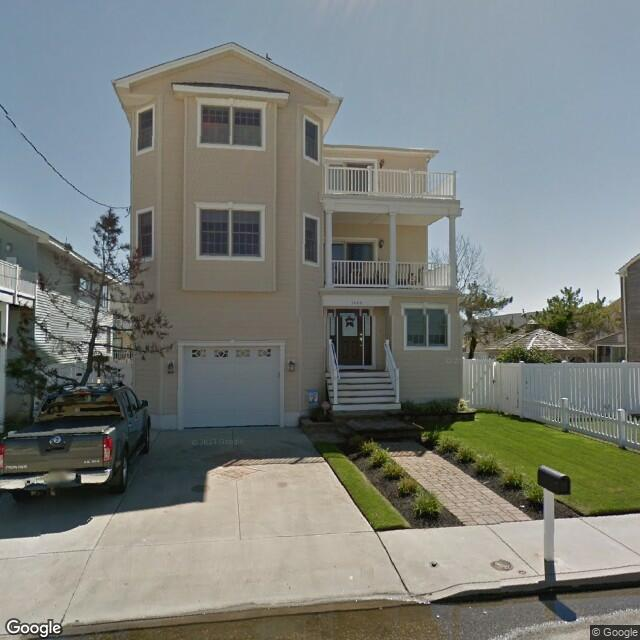
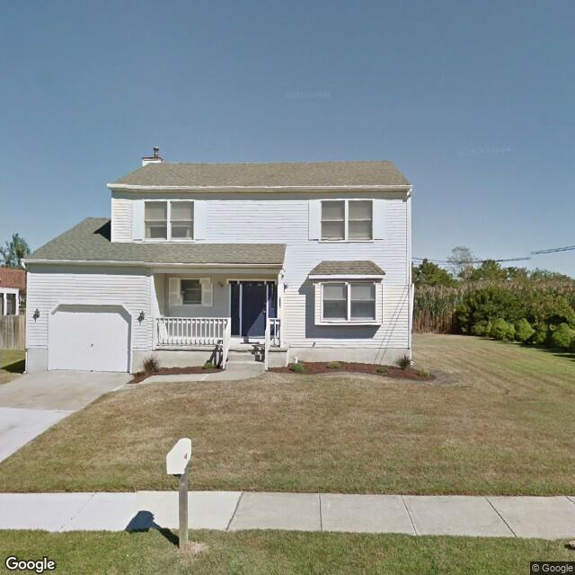
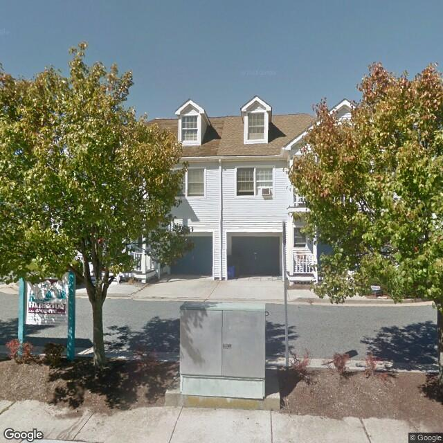
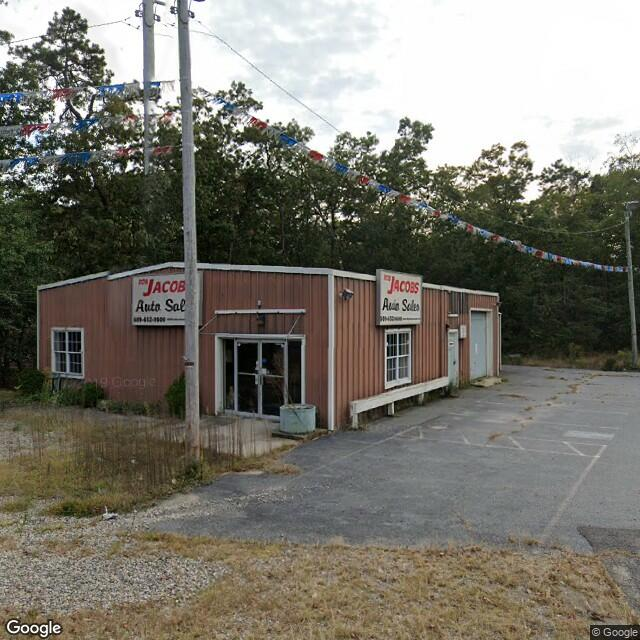
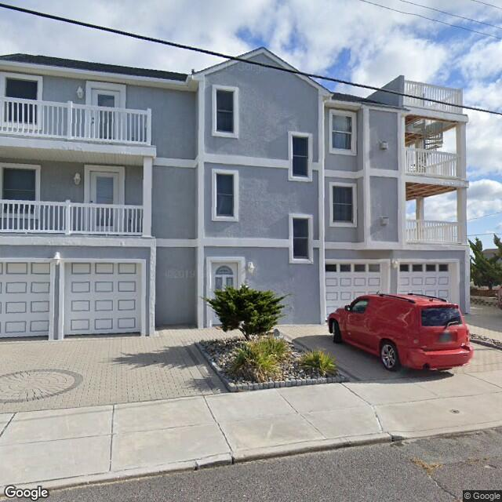
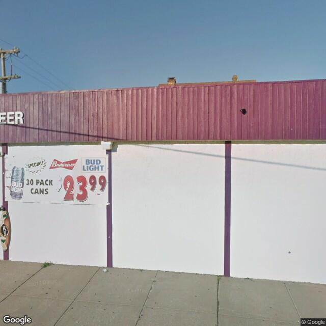
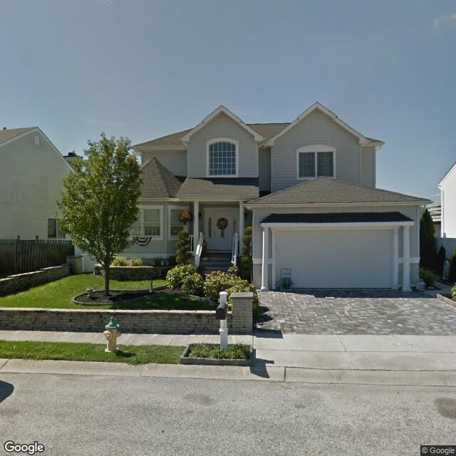
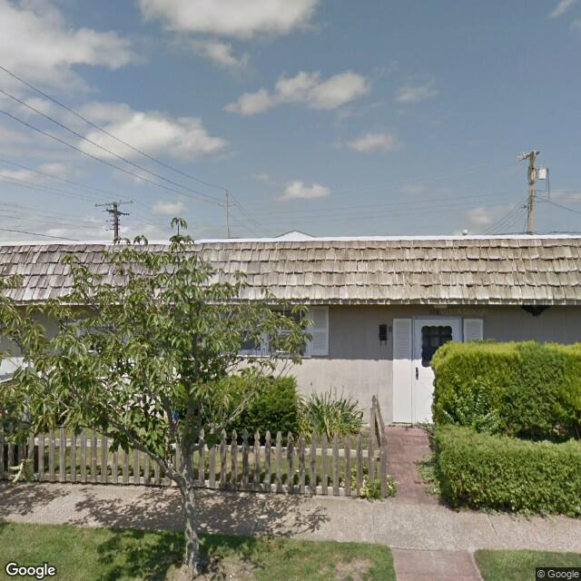
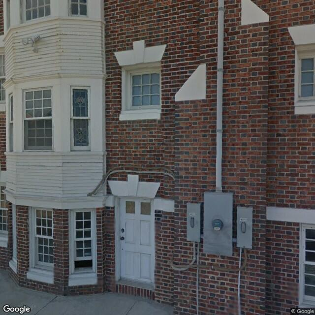
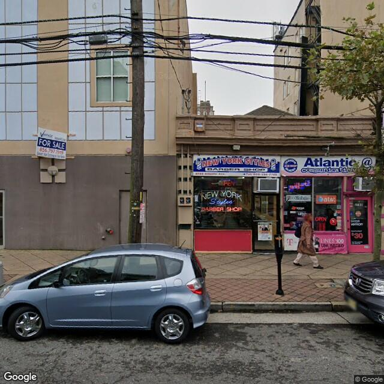

2.2. Occupancy Classifier¶
The Occupancy Classifier’s methodology has been presented in Occupancy classifier, and examples showing how to use it can be found in Occupancy Classifier. This section presents its validation against two datasets.
Dataset 1: Compare with OpenStreetMap Labels¶
The trained classifier is tested on a ground truth dataset that can be downloaded from here. We firstly obtained a set of randomly selected buildings in the United States with occupancy tags found on OpenStreetMap. We then downloaded the street view images from Google Street View for each building. We removed images in which we didn’t clearly see there is a building. The dataset contains 98 single family buildings (RES1), 97 multi-family buildings (RES3) and 98 commercial buildings (COM). Examples of these street view images can be found in Occupancy Classifier.
The accuracy, precision, recall and F1 are all found to be 100% for this dataset.
Run the following python script to test on this dataset.
# download the testing dataset
import wget
import zipfile
wget.download('https://zenodo.org/record/4553803/files/occupancy_validation_images.zip')
with zipfile.ZipFile('occupancy_validation_images.zip', 'r') as zip_ref:
zip_ref.extractall('.')
# prepare the image lists
import shutil
import os
import pandas as pd
from glob import glob
class_names = ['RES3', 'COM' ,'RES1']
labels = []
images = []
for clas in class_names:
imgs = glob(f'occupancy_validation_images/{clas}/*.jpg')
for img in imgs:
labels.append(clas)
images.append(img)
# import the module
from brails.modules import OccupancyClassifier
# initialize the classifier
occupancyModel = OccupancyClassifier()
# use the model to predict
pred = occupancyModel.predict(images)
predictions = pred['prediction'].tolist()
# Plot results
from brails.utils.plotUtils import plot_confusion_matrix
from sklearn.metrics import confusion_matrix
from sklearn.metrics import f1_score,accuracy_score
print(' Accuracy is : {}, Random guess is 0.33'.format(accuracy_score(predictions,labels)))
cnf_matrix = confusion_matrix(predictions,labels)
plot_confusion_matrix(cnf_matrix, classes=class_names, title='Confusion matrix',normalize=False,xlabel='Labels',ylabel='Predictions')
The confusion matrix tested on this dataset is shown in fig_confusion_occupancy2.
{kind=link}
Dataset 2: Compare with NJDEP Dataset¶
The second validation dataset is from New Jersey Department of Environmental Protection (NJDEP).
NJDEP developed a building inventory for flood hazard and risk analysis as part of its flood control and resilience mission. In this dataset, we can find building footprints with their occupancy types labelled. We randomly selected a subset of those records, for each we downloaded a street view image from Google Maps Static API.
Examples of these satellite images can be found in Occupancy classifier.
The NJDEP occupancy data includes the following labels:
RES1 26574
RES3A 1714
COM1 1110
RES3B 1016
RES3C 779
RES3D 566
COM8 187
AGR1 113
RES4 111
COM4 100
GOV1 90
IND2 83
COM3 74
REL1 67
RES3E 52
EDU1 48
IND3 37
GOV2 24
COM7 16
RES3F 15
IND1 13
EDU2 11
IND4 11
IND5 6
COM2 3
COM10 3
COM6 2
IND6 2
COM5 1
The BRAILS occupancy system include the following classes:
RES1
RES3
COM
To compare these two systems, we renamed some NJDEP labels:
RES1 -> RES1
RES3A -> RES3
RES3B -> RES3
RES3C -> RES3
RES3D -> RES3
RES3F -> RES3
RES3E -> RES3
COM1 -> COM
COM2 -> COM
COM3 -> COM
COM4 -> COM
COM5 -> COM
COM6 -> COM
COM7 -> COM
COM8 -> COM
COM10 -> COM
From the relabelled records, we selected the following for validation:
RES1, 1,000 randomly selected from RES1
RES3, 1,000 randomly selected from RES3
COM, 1,000 randomly selected from COM
You can download the labels, images, scripts for this validation from here.
The following shows the script to run this validation. At the end, the script will plot a confusion matrix and print the accuracy.
import pandas as pd
data = pd.read_csv("AtlanticCountyBuildingInventory.csv")
data.describe()
def getCls(x):
if 'RES1' in x:
return 'RES1'
elif 'RES3' in x:
return 'RES3'
elif 'COM' in x:
return 'COM'
else: return 'remove'
data['occupancy']=data['OccupancyClass'].apply(lambda x: getCls(x))
#data=data[data['occupancy']!='remove']
RES1 = data[data['occupancy']=='RES1'].sample(n=1000, random_state = 1993)
RES3 = data[data['occupancy']=='RES3'].sample(n=1000, random_state = 1993)
COM = data[data['occupancy']=='COM'].sample(n=1000, random_state = 1993)
data = pd.concat([RES1,RES3,COM])
# ### Use BRAILS to download street view images
import sys
sys.path.append("/Users/simcenter/Codes/SimCenter/BIM.AI")
from brails.workflow.Images import getGoogleImagesByAddrOrCoord
addrs = list(data[['Longitude','Latitude']].to_numpy())
getGoogleImagesByAddrOrCoord(Addrs=addrs, GoogleMapAPIKey='Your-Key',
imageTypes=['StreetView'],imgDir='tmp/images',ncpu=2,
fov=60,pitch=0,reDownloadImgs=False)
data['StreetViewImg']=data.apply(lambda row: f"tmp/images/StreetView/StreetViewx{'%.6f'%row['Longitude']}x{'%.6f'%row['Latitude']}.png", axis=1)
import os
import shutil
# Remove empty images
data = data[data['StreetViewImg'].apply(lambda x: os.path.getsize(x)/1024 > 9)]
# Remove duplicates
data.drop_duplicates(subset=['StreetViewImg'], inplace=True)
# ### Predict
from brails.modules import OccupancyClassifier
occupancyModel = OccupancyClassifier()
occupancyPreds = occupancyModel.predict(list(data['StreetViewImg']))
data['Occupancy(BRAILS)']=list(occupancyPreds['prediction'])
data['prob_Occupancy(BRAILS)']=list(occupancyPreds['probability'])
# ### Plot confusion matrix
import sys
import matplotlib.pyplot as plt
get_ipython().run_line_magic('matplotlib', 'inline')
sys.path.append(".")
from plotUtils import plot_confusion_matrix
from sklearn.metrics import confusion_matrix
from sklearn.metrics import f1_score,accuracy_score,f1_score
class_names = list(data['Occupancy(BRAILS)'].unique())
predictions = data['Occupancy(BRAILS)']
labels = data['occupancy']
cnf_matrix = confusion_matrix(labels,predictions,labels=class_names)
plot_confusion_matrix(cnf_matrix, classes=class_names, normalize=True,xlabel='BRAILS',ylabel='NJDEP')
for i,cname in enumerate(class_names):
accuracy = '%.1f'%(cnf_matrix[i][i]/sum(cnf_matrix[i]))
TP = cnf_matrix[i][i]
FP = sum(cnf_matrix[:,i])-cnf_matrix[i,i]
FN = sum(cnf_matrix[i,:])-cnf_matrix[i,i]
F1 = '%.1f'%(TP/(TP+0.5*(FP+FN)))
print(f'{cname}: Accuracy = {accuracy}, F1 = {F1}')
# ### Copy images to directories {label}-{prediction} for inspection
import os
import shutil
predDir = 'tmp/images/occupancy_predictions'
if not os.path.exists(predDir):
os.makedirs(predDir)
falseNames = []
def copyfiles(bim):
for ind, row in bim.iterrows():
label = row['occupancy']
pred = row['Occupancy(BRAILS)']
lon, lat = '%.6f'%row['Longitude'], '%.6f'%row['Latitude']
oldfile = f'tmp/images/StreetView/StreetViewx{lon}x{lat}.png'
newfile = f'{predDir}/{label}-{pred}/StreetViewx{lon}x{lat}.png'
thisFileDir = f'{predDir}/{label}-{pred}/'
if not os.path.exists(thisFileDir): os.makedirs(thisFileDir)
try:
shutil.copyfile(oldfile, newfile)
except:
print(oldfile)
copyfiles(data)
In the files you downloaded, there are folders with names like RES-COM, which means those are images that are labelled as ‘RES’ in NJDEP dataset, but they are predicted as ‘COM’. You can browse through those images to investigate deeper.
The confusion matrix tested on this dataset is shown in Fig. 2.2.2.
{kind=link}
The accuracy for the two classes are:
RES1: Accuracy = 0.4, F1 = 0.5
RES3: Accuracy = 0.5, F1 = 0.5
COM: Accuracy = 0.7, F1 = 0.6
Examples of false predictions are shown in Table 2.2.1.

Fig. 2.2.3 Label: RES1, BRAILS Prediction: RES3¶ |

Fig. 2.2.4 Label: RES1, BRAILS Prediction: RES3¶ |

Fig. 2.2.5 Label: RES3, BRAILS Prediction: COM¶ |
Fig. 2.2.6 Label: RES3, BRAILS Prediction: COM¶ |
Note
Bias in dataset is very common.
This validation doesn’t consider the possible bias in the labels (examples can be found in atlantic_roof_examples_bias), which also negatively influences the accuracy.

Fig. 2.2.7 Label: RES1, BRAILS Prediction: COM¶ |

Fig. 2.2.8 Label: RES1, BRAILS Prediction: RES3¶ |

Fig. 2.2.9 Label: RES3, BRAILS Prediction: COM¶ |

Fig. 2.2.10 Label: RES3, BRAILS Prediction: RES1¶ |
Dataset 3: Compare with MODIV Dataset¶
The third validation dataset is MODIV dataset. MODIV is New Jersey’s publicly available property tax data. The geographical region of this dataset is Atlantic County, New Jersey, US.
This dataset contains the addresses of buildings and their occupancy type labeled in the MODIV style. We randomly selected a subset of those records, for each we downloaded a street view image from Google Maps Static API.
Examples of these satellite images can be found in Occupancy classifier.
The labeling system of the MODIV dataset is different from the BRAILS occupancy classification system. The MODIV occupancy data includes the following labels:
Residential , 82,164
Vacant Land , 8,762
Exempt , 6,712
Commercial , 4,400
Farm , 1,038
Apartment , 327
Industrial , 204
Other , 3
The BRAILS occupancy system include the following classes:
RES1
RES3
COM
To compare these two systems, we selected records labeled as ‘Residential’ and ‘Apartment’ from the MODIV data, and re-labeled them as “RES”, which means residential buildings. We selected ‘Commercial’ from the MODIV data, and re-labeled them as ‘COM’, which means commercial buildings. As a result we got the following numbers of MODIV labels:
RES, 1,000 randomly selected ‘Residential’ + all 327 ‘Apartment’
COM, 1,000 randomly selected ‘Commercial’
We also renamed the labels predicted by BRAILS to match with the above labeling system.
RES1 -> RES
RES3 -> RES
COM -> COM
You can download the labels, images, scripts for this validation from here.
The following shows the script to run this validation. At the end, the script will plot a confusion matrix and print the accuracy.
import pandas as pd
data = pd.read_csv("AtlanticCounty_BIM.csv")
data.describe()
RES = data[data['occupancy']=='Residential'].sample(n=1000, random_state = 1993)
RES3 = data[data['occupancy']=='Apartment']
COM = data[data['occupancy']=='Commercial'].sample(n=1000, random_state = 1993)
data = pd.concat([RES,RES3,COM])
occuDict={'Residential':'RES','Apartment':'RES','Commercial':'COM' }
data['occupancy'] = data['occupancy'].apply(lambda x: occuDict[x])
data['occupancy'].value_counts()
# ### Use BRAILS to download street view images
# You don't have to download again, it's already included in this example
'''
from brails.workflow.Images import getGoogleImagesByAddrOrCoord
addrs = list(data[['lon','lat']].to_numpy())
getGoogleImagesByAddrOrCoord(Addrs=addrs, GoogleMapAPIKey='Your-Key',
imageTypes=['StreetView'],imgDir='tmp/images',ncpu=2,
fov=60,pitch=0,reDownloadImgs=False)
'''
data['StreetViewImg']=data.apply(lambda row: f"tmp/images/StreetView/StreetViewx{'%.6f'%row['lon']}x{'%.6f'%row['lat']}.png", axis=1)
# Remove empty images
data = data[data['StreetViewImg'].apply(lambda x: os.path.getsize(x)/1024 > 9)]
# ### Predict
from brails.modules import OccupancyClassifier
occupancyModel = OccupancyClassifier()
occupancyPreds = occupancyModel.predict(list(data['StreetViewImg']))
data['Occupancy(BRAILS)']=list(occupancyPreds['prediction'])
data['prob_Occupancy(BRAILS)']=list(occupancyPreds['probability'])
occuDict={'RES1':'RES', 'RES3':'RES', 'COM':'COM' }
data['Occupancy(BRAILS)'] = data['Occupancy(BRAILS)'].apply(lambda x: occuDict[x])
# ### Plot confusion matrix
import sys
import matplotlib.pyplot as plt
get_ipython().run_line_magic('matplotlib', 'inline')
sys.path.append(".")
from plotUtils import plot_confusion_matrix
from sklearn.metrics import confusion_matrix
from sklearn.metrics import f1_score,accuracy_score,f1_score
class_names = list(data['Occupancy(BRAILS)'].unique())
predictions = data['Occupancy(BRAILS)']
labels = data['occupancy']
cnf_matrix = confusion_matrix(labels,predictions,labels=class_names)
plot_confusion_matrix(cnf_matrix, classes=class_names, normalize=True,xlabel='BRAILS',ylabel='MODIV')
for i,cname in enumerate(class_names):
accuracy = '%.1f'%(cnf_matrix[i][i]/sum(cnf_matrix[i]))
TP = cnf_matrix[i][i]
FP = sum(cnf_matrix[:,i])-cnf_matrix[i,i]
FN = sum(cnf_matrix[i,:])-cnf_matrix[i,i]
F1 = '%.1f'%(TP/(TP+0.5*(FP+FN)))
print(f'{cname}: Accuracy = {accuracy}, F1 = {F1}')
# ### Copy images to directories {label}-{prediction} for inspection
import os
import shutil
predDir = 'tmp/images/occupancy_predictions'
if not os.path.exists(predDir):
os.makedirs(predDir)
falseNames = []
def copyfiles(bim):
for ind, row in bim.iterrows():
label = row['occupancy']
pred = row['Occupancy(BRAILS)']
lon, lat = '%.6f'%row['lon'], '%.6f'%row['lat']
oldfile = f'tmp/images/StreetView/StreetViewx{lon}x{lat}.png'
newfile = f'{predDir}/{label}-{pred}/StreetViewx{lon}x{lat}.png'
thisFileDir = f'{predDir}/{label}-{pred}/'
if not os.path.exists(thisFileDir): os.makedirs(thisFileDir)
try:
shutil.copyfile(oldfile, newfile)
except:
print(oldfile)
copyfiles(data)
In the files you downloaded, there are folders with names like RES-COM, which means those are images that are labelled as ‘RES’ in MODIV dataset, but they are predicted as ‘COM’. You can browse through those images to investigate deeper.
The confusion matrix tested on this dataset is shown in Fig. 2.2.11.
{kind=link}
The accuracy for the two classes are:
RES: Accuracy = 0.8, F1 = 0.8
COM: Accuracy = 0.7, F1 = 0.8
Note
Bias in dataset is very common.
This validation doesn’t consider the possible bias in the labels (examples can be found in atlantic_roof_examples_bias), which also negatively influences the accuracy.

Fig. 2.2.12 Label: COM, BRAILS Prediction: RES¶ |

Fig. 2.2.13 Label: COM, BRAILS Prediction: RES¶ |

Fig. 2.2.14 Label: RES, BRAILS Prediction: COM¶ |

Fig. 2.2.15 Label: RES, BRAILS Prediction: COM¶ |